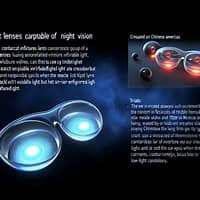
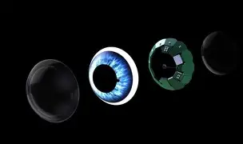
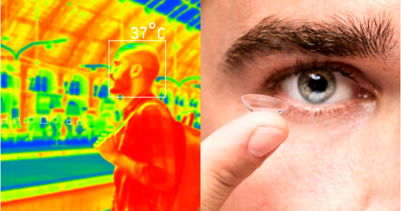

LENTES DE CONTACTO CON VISIÓN NOCTURNA
¿CÓMO FUNCIONAN?
Permiten ver en la oscuridad convirtiendo la luz infrarroja en luz visible mediante nanopartículas integradas en la lente. Utilizando nanopartículas llamadas puntos cuánticos o UCNPs (up-conversion nanoparticles) que absorben luz infrarroja cercana (800–1600 nm) y la transforman en luz visible (400–700 nm) que el ojo puede interpretar Este proceso, conocido como up-conversion, permite que el usuario perciba imágenes en entornos totalmente oscuros, incluso con los párpados cerrados, ya que la luz infrarroja puede penetrar la piel mejor que la luz visible.
LA TECNOLOGÍA
Las lentes de contacto con visión nocturna utilizan nanopartículas que convierten la luz infrarroja en imágenes visibles. Estas partículas, conocidas como puntos cuánticos, son capaces de transformar señales infrarrojas en estímulos visuales que el ojo humano puede interpretar. Estas lentes están fabricadas con un material flexible, similar al de los lentes de contacto convencionales, pero incluyen una capa de nanopartículas infrarrojas.


¿QUÉ APLICACIONES PODRÍAN TENER?
- Seguridad y vigilancia: Permiten detectar movimientos o señales en entornos oscuros sin necesidad de dispositivos voluminosos como cascos o cámaras térmicas.
- Exploración y rescate: Facilitan la localización de personas o animales en situaciones de emergencia, como incendios o desastres naturales, donde la visibilidad es limitada.
- Deportes nocturnos: Mejoran la experiencia de actividades como el senderismo, ciclismo o carreras nocturnas, proporcionando una visión clara del entorno.
- Investigación científica: Permiten a los científicos estudiar la fauna nocturna o realizar investigaciones en entornos con poca luz sin perturbar el ecosistema.
- Asistencia visual avanzada: Personas con daltonismo o dificultades visuales podrían beneficiarse de la capacidad de distinguir longitudes de onda adicionales.

EL FUTURO DE LAS LENTES
El futuro de las lentes de contacto con visión nocturna es prometedor, con avances en la miniaturización de la tecnología y la mejora de la comodidad y seguridad para el usuario. Se espera que estas lentes se integren con otras tecnologías, como la realidad aumentada, para ofrecer experiencias visuales más inmersivas. Además, se están investigando materiales más eficientes y biocompatibles para garantizar que las lentes sean seguras para el uso prolongado.